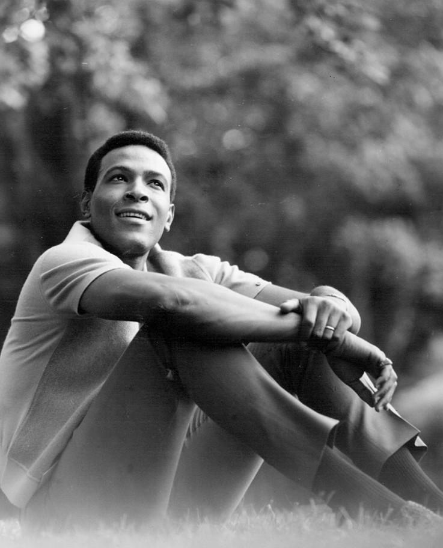

Marvin Gaye was a Washington, D.C. singer who became Motown's most versatile male star of the 1960s.
He started out playing drums on other acts' sessions and ended the decade with seven weeks at No. 1.

Table of Contents
- From Washington, D.C. to the Moonglows
- Session Drummer to Solo Star
- The Hit Run and the Duet Partners
- Marvin Gaye and Tammi Terrell
- I Heard It Through the Grapevine
- After the Sixties
- FAQ
From Washington, D.C. to the Moonglows
A Hard Home and the Air Force
Marvin Gaye was born Marvin Pentz Gay Jr. on April 2, 1939, in Washington, D.C.
His father, Marvin Gay Sr., was a strict church minister.
The boy sang in church from age four and took frequent beatings at home.
At 17 he quit high school for the US Air Force, then talked his way to a general discharge.
His sergeant wrote that "Airman Gay cannot adjust to regimentation nor authority."
Harvey Fuqua and the Moonglows
Back home he formed a quartet, the Marquees, whose one OKeh single went nowhere.
Harvey Fuqua then hired them as Harvey and the New Moonglows.
In Chicago they cut sides for Chess in 1959 and sang backup for Chuck Berry.
When the group split in 1960, he followed Fuqua to Detroit.
Session Drummer to Solo Star
Signing With Tamla
He reportedly signed with Motown's Tamla label on September 19, 1960.
He wanted to be a jazz crooner.
His first single came out in May 1961 under the name "Gay," and soon after he added the "e."
Through 1961 he drummed on sessions for the Miracles, the Marvelettes and Jimmy Reed.
He co-wrote the Marvelettes' "Beechwood 4-5789" and, later, "Dancing in the Street."
Stubborn Kind of Fellow and Pride and Joy
"Stubborn Kind of Fellow" became his first solo hit in 1962, reaching No. 8 R&B.
He sang it in a gospel rasp far from his natural croon.
"Hitch Hike" gave him a pop Top 40 hit in March 1963.
That July, "Pride and Joy" reached No. 10.
In June 1963 he married Anna Gordy, Berry Gordy's sister.
The Hit Run and the Duet Partners
Holland-Dozier-Holland gave him "Can I Get a Witness" and "How Sweet It Is (To Be Loved by You)," a No. 6 hit.
Smokey Robinson wrote and produced "I'll Be Doggone" and "Ain't That Peculiar."
Both made the pop Top 10 and became his first R&B No. 1s.
Gaye's first charting album was Together, a 1964 duet set with Mary Wells.
In 1966 he cut "It Takes Two" with Kim Weston.
Press Play on any row to hear the single.
| Play | ||||
|---|---|---|---|---|
| "Stubborn Kind of Fellow" | 1962 | No. 46 | No. 8 | |
| "Hitch Hike" | 1962 | No. 30 | No. 12 | |
| "Pride and Joy" | 1963 | No. 10 | No. 2 | |
| "Can I Get a Witness" | 1963 | No. 22 | No. 3 | |
| "How Sweet It Is (To Be Loved by You)" | 1964 | No. 6 | No. 3 | |
| "I'll Be Doggone" | 1965 | No. 8 | No. 1 | |
| "Ain't That Peculiar" | 1965 | No. 8 | No. 1 | |
| "It Takes Two" (with Weston) | 1966 | No. 14 | No. 4 | |
| "Ain't No Mountain High Enough" (with Terrell) | 1967 | No. 19 | No. 3 | |
| "Your Precious Love" (with Terrell) | 1967 | No. 5 | No. 2 | |
| "Ain't Nothing Like the Real Thing" (with Terrell) | 1968 | No. 8 | No. 1 | |
| "You're All I Need to Get By" (with Terrell) | 1968 | No. 7 | No. 1 | |
| "I Heard It Through the Grapevine" | 1968 | No. 1 | No. 1 | |
| "Too Busy Thinking About My Baby" | 1969 | No. 4 | No. 1 | |
| "That's the Way Love Is" | 1969 | No. 7 | No. 2 |
Peaks are from Billboard's chart history.
Marvin Gaye and Tammi Terrell
The Ashford & Simpson Duets
In 1967 he found his best duet partner.
Tammi Terrell's bright voice met his in the middle of every chorus.
Nickolas Ashford and Valerie Simpson wrote their biggest records.
"Ain't No Mountain High Enough" earned his first Grammy nomination.
Four of their follow-ups reached the pop Top 10.
Collapse at Hampden-Sydney
On October 14, 1967, Terrell collapsed in his arms on stage in Farmville, Virginia.
Doctors found a brain tumor, and she never performed live again.
He grew disillusioned with the record business.
I Heard It Through the Grapevine
The Record Gordy Turned Down
Norman Whitfield and Barrett Strong wrote "I Heard It Through the Grapevine."
Whitfield produced the Marvin Gaye version in 1967, but Gordy rejected it as a single.
Gladys Knight & the Pips took their version to No. 2 that year.
Radio DJs found his on the album In the Groove.
Seven Weeks at No. 1
Tamla issued it as a single on October 30, 1968.
It hit No. 1 on the Hot 100 on December 14 and stayed seven weeks.
In Britain it was No. 1 for three weeks from March 26, 1969.
It sold more than four million copies.
Gaye, depressed over Terrell, said the success was something he "didn't deserve."
It sits at No. 88 on our best 60s songs list.
Closing Out the Decade
"Too Busy Thinking About My Baby" reached No. 4 in 1969, and "That's the Way Love Is" No. 7.
Whitfield also cut "Grapevine" with The Temptations for Cloud Nine.
After the Sixties
Terrell died on March 16, 1970.
That June he recorded "What's Going On," which reached No. 2 in 1971.
"Sexual Healing" won him his first two Grammys in 1983.
On April 1, 1984, his father shot and killed him in Los Angeles.
The Rock and Roll Hall of Fame inducted him in 1987.
Hear his peers in the Motown, soul and R&B hub.
His biggest years ran from 1965 through 1968.
FAQ
What was Marvin Gaye's first hit?
"Stubborn Kind of Fellow" in 1962 reached No. 8 on the R&B chart.
"Pride and Joy" was his first pop Top 10.
Why did he add an e to his name?
He added it in 1961, soon after his first single came out under "Gay."
Biographers give different reasons.
How long was I Heard It Through the Grapevine at number one?
Seven weeks on the Hot 100, from December 14, 1968, to January 25, 1969.
Who did he sing duets with?
Mary Wells, Kim Weston and, most successfully, Tammi Terrell.
When was he inducted into the Rock and Roll Hall of Fame?
In 1987, three years after his death.
The full life story is in Wikipedia's entry.
Start with "Pride and Joy," then let "Grapevine" show you why Marvin Gaye still matters.